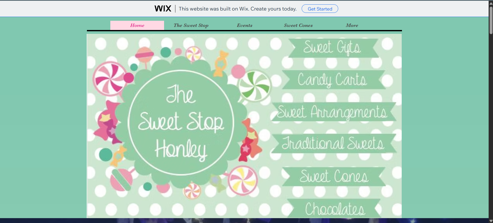

Role
I helped my aunt set up the shop itself, then took on the website when she asked for help with the Wix page she had started.
Visit live site
My first live commercial website: a Wix site for my aunt’s local sweet shop in Honley, built while I was still at college.
I helped my aunt set up the shop itself, then took on the website when she asked for help with the Wix page she had started.
Visit live site
The Sweet Stop was a small local business owned by my aunt. My involvement started well before there was a website: I helped paint the inside of the shop and build its shelves, worked behind the counter serving customers on several occasions, and joined the business at fairs, birthdays and weddings. Seeing how the shop worked in person gave me a much clearer idea of what its website needed to communicate.
My aunt had created a Wix account and made a first attempt at building the site herself. She then asked me to help develop it. I reworked the layout substantially and added more images while keeping to the colours, standards and sweet-shop aesthetic she had specified. The mint and pink palette, product imagery and playful presentation needed to feel like the business people would find when they visited the shop.
The site gives visitors a way to explore the shop and its sweets, find information about events and sweet cones, connect through the business’s social pages and locate the shop on a map. It was designed to be useful to somebody planning a visit as well as someone who had first met the business at a fair or celebration.
This was the first commercial website I built and put live while I was still attending college. It brought together the practical work of helping a family business with the web-design skills I was developing at the time. Unlike a classroom brief, the site had a real owner, a real visual direction and customers who might actually use it.
The website is still available online. Looking back at it now, I can see both the design choices of that period and how much I learned by having to make a site that represented an actual local shop.